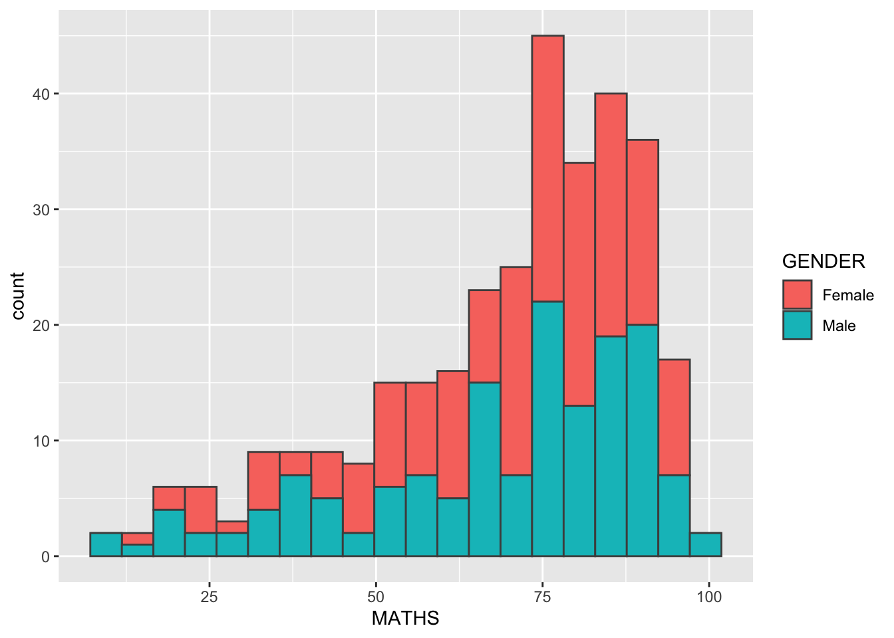
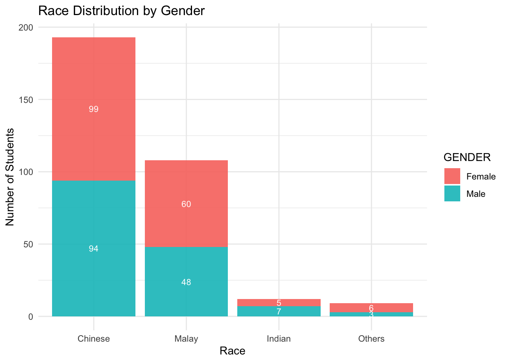
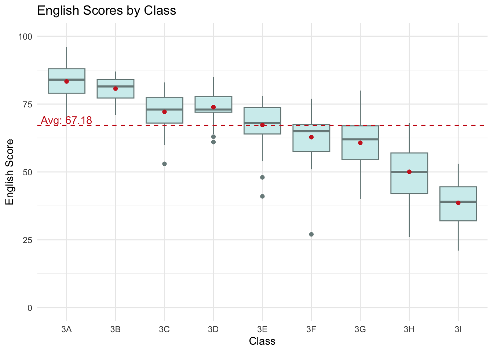

pacman::p_load(tidyverse)Hands-on Exercise 1
Content of This Page
- theory: a summary of R for Visual Analytics - Chap 1
- starting with R
- basics about ggplot2
- dive into each layered grammars of ggplot2
- practice: some exploration about the dataset
1. Getting started
Install and launching R packages
The code below use p_load() of pacman packages to check if tidyverse packages are installed in the computer. If there are, then they will launch into R
Importing the data
The code chunk below imports exam_data.csv into R environment by using read_csv() function of readr package.
exam_data <- read_csv("data/Exam_data.csv")Rows: 322 Columns: 7
── Column specification ────────────────────────────────────────────────────────
Delimiter: ","
chr (4): ID, CLASS, GENDER, RACE
dbl (3): ENGLISH, MATHS, SCIENCE
ℹ Use `spec()` to retrieve the full column specification for this data.
ℹ Specify the column types or set `show_col_types = FALSE` to quiet this message.Generating a summary of the imported data
summary(exam_data) ID CLASS GENDER RACE
Length:322 Length:322 Length:322 Length:322
Class :character Class :character Class :character Class :character
Mode :character Mode :character Mode :character Mode :character
ENGLISH MATHS SCIENCE
Min. :21.00 Min. : 9.00 Min. :15.00
1st Qu.:59.00 1st Qu.:58.00 1st Qu.:49.25
Median :70.00 Median :74.00 Median :65.00
Mean :67.18 Mean :69.33 Mean :61.16
3rd Qu.:78.00 3rd Qu.:85.00 3rd Qu.:74.75
Max. :96.00 Max. :99.00 Max. :96.00
About summary(data_frame)
It will display length, class, and mode for categorical variables, and display Min, 1st Qu, Median, Mean, 3rd Qu, Max for numeric variables
2. ggplot2 Basics
ggplot2 is an R package for declaratively creating data-driven graphics based on The Grammar of Graphics. It is also part of the tidyverse family specially designed for visual exploration and communication.
For more detail about ggplot2
Comparing R Graphics VS ggplot
hist(exam_data$MATHS)
ggplot(data=exam_data, aes(x = MATHS)) +
geom_histogram(bins=10,
boundary = 100,
color="black",
fill="grey") +
ggtitle("Distribution of Maths scores")
Grammar of Graphics
There are two principles in Grammar of Graphics:
Graphics = distinct layers of grammatical elements
Meaningful plots through aesthetic mapping
A Layered Grammar of Graphics
ggplot2 is an implementation of Leland Wilkinson’s Grammar of Graphics. Figure below shows the seven grammars of ggplot2.

A short description of each building block are as follows:
- Data: The dataset being plotted.
- Aesthetics take attributes of the data and use them to influence visual characteristics, such as position, colours, size, shape, or transparency.
- Geometrics: The visual elements used for our data, such as point, bar or line.
- Facets split the data into subsets to create multiple variations of the same graph (paneling, multiple plots).
- Statistics, statistical transformations that summarise data (e.g. mean, confidence intervals).
- Coordinate systems define the plane on which data are mapped on the graphic.
- Themes modify all non-data components of a plot, such as main title, sub-title, y-axis title, or legend background.
An Overview of Layered Grammar
below shows how each layer built on top of each other based on the 7 grammars of ggplot2
ggplot(data=exam_data)
ggplot(data=exam_data,
aes(x= MATHS))
ggplot(data=exam_data,
aes(x= MATHS)) +
geom_histogram(bins=20) 
ggplot(data=exam_data,
aes(x= MATHS)) +
geom_histogram(bins=20,
color="black",
fill="light blue") 
ggplot(data=exam_data,
aes(x= MATHS)) +
geom_histogram(bins=20,
color="black",
fill="light blue") +
facet_wrap(~ CLASS) ggplot(data=exam_data,
aes(x= MATHS)) +
geom_histogram(bins=20,
color="black",
fill="light blue") +
facet_wrap(~ CLASS) +
coord_flip()ggplot(data=exam_data,
aes(x= MATHS)) +
geom_histogram(bins=20,
color="black",
fill="light blue") +
facet_wrap(~ CLASS) +
coord_flip() +
theme_minimal() 
3. Diving into Each Grammatical Element
Data
ggplot()initializes a ggplot object.The data argument defines the dataset to be used for plotting.
ggplot(data=exam_data)
Aesthetic mappings
All aesthetics of a plot are specified in the
aes()function calleach geom layer can have its own aes specification
adding the aesthetic element to include the x-axis and the axis’s label
ggplot(data=exam_data,
aes(x= MATHS))
ggplot2 Geometric Objects
Geometric objects are the actual marks we put on a plot. Examples include:
geom_point for drawing individual points (e.g., a scatter plot)
geom_line for drawing lines (e.g., for a line charts)
geom_smooth for drawing smoothed lines (e.g., for simple trends or approximations)
geom_bar for drawing bars (e.g., for bar charts)
geom_histogram for drawing binned values (e.g. a histogram)
geom_polygon for drawing arbitrary shapes
geom_map for drawing polygons in the shape of a map! (You can access the data to use for these maps by using the map_data() function).
A plot must have at least one geom; there is no upper limit. You can add a geom to a plot using the + operator.

Geometric Objects: geom_bar
ggplot(data=exam_data,
aes(x=RACE)) +
geom_bar()
Geometric Objects: geom_dotplot
width of a dot: bin width (or maximum width, depending on the binning algorithm),
dots are stacked, each dot representing one observation
ggplot(data=exam_data,
aes(x = MATHS)) +
geom_dotplot(binwidth=2.5,
dotsize = 0.5) +
scale_y_continuous(NULL,
breaks = NULL) 
ggplot(data=exam_data,
aes(x = MATHS)) +
geom_dotplot(dotsize = 0.5)Bin width defaults to 1/30 of the range of the data. Pick better value with
`binwidth`.
Note
The y scale is not very useful, in fact it is very misleading.
Instead should perform the following two steps:
scale_y_continuous()is used to turn off the y-axis, andbinwidth argument is used to change the binwidth to 2.5.
Geometric Objects: geom_histogram()
plotting a histogram using geom_histogram() using MATHS field of exam_data
ggplot(data=exam_data,
aes(x = MATHS)) +
geom_histogram() `stat_bin()` using `bins = 30`. Pick better value with `binwidth`.
- bins: change the number of bins to 20 (default = 30)
- fill: shade the histogram with light blue color
- color: change the outline colour to black
ggplot(data=exam_data,
aes(x= MATHS)) +
geom_histogram(bins=20,
color="black",
fill="light blue") 
- different gender are shaded in different colors
ggplot(data=exam_data,
aes(x= MATHS,
fill = GENDER)) +
geom_histogram(bins=20,
color="grey30") 
Geometric Objects: geom-density()
computes and plots kernel density estimate - smoothed version of histogram
alternative to histogram for continuous data that comes from an underlying smooth distribution
distribution of Maths scores in a kernel density estimate plot
ggplot(data=exam_data,
aes(x = MATHS)) +
geom_density() 
two kernel density lines by using colour or fill arguments of aes()
ggplot(data=exam_data,
aes(x = MATHS,
colour = GENDER)) +
geom_density() 
Geometric Objects: geom_boxplot
geom_boxplot()displays continuous value list.visualises 5 summary statistics (median, 2 hinges and 2 whiskers), and all “outlying” points individually.
ggplot(data=exam_data,
aes(y = MATHS,
x= GENDER)) +
geom_boxplot() 
- Notches are used to help visually assess whether the medians of distributions differ
- If the notches do not overlap, the medians are different
ggplot(data=exam_data,
aes(y = MATHS,
x= GENDER)) +
geom_boxplot(notch=TRUE)
Geometric Objects: geom_violin
geom_violincreates violin plot which are comparing multiple data distributions
ggplot(data=exam_data,
aes(y = MATHS,
x= GENDER)) +
geom_violin() 
Geometric Objects: geom_point()
geom_point()is especially useful for creating scatterplot.
ggplot(data=exam_data,
aes(x= MATHS,
y=ENGLISH)) +
geom_point() 
A Combined Plot
The code chunk below plots the data points on the boxplots by using both geom_boxplot() and geom_point().
ggplot(data=exam_data,
aes(y = MATHS,
x= GENDER)) +
geom_boxplot() +
geom_point(position="jitter",
size = 0.5) 
Stat
The Statistics functions statistically transform data, usually as some form of summary
There are two ways to use these functions:
add a
stat_()function and override the default geom, oradd a
geom_()function and override the default stat.
Working with Boxplot
The default boxplots are incomplete because the positions of the means were not shown.
ggplot(data=exam_data,
aes(y = MATHS, x= GENDER)) +
geom_boxplot() +
stat_summary(geom = "point",
fun.y="mean",
colour ="red",
size=4) Warning: The `fun.y` argument of `stat_summary()` is deprecated as of ggplot2 3.3.0.
ℹ Please use the `fun` argument instead.
ggplot(data=exam_data,
aes(y = MATHS, x= GENDER)) +
geom_boxplot() +
geom_point(stat="summary",
fun.y="mean",
colour ="red",
size=4) Warning in geom_point(stat = "summary", fun.y = "mean", colour = "red", :
Ignoring unknown parameters: `fun.y`No summary function supplied, defaulting to `mean_se()`
Working with scatterplot
The scatterplot below shows the relationship of Maths and English grades of pupils. The interpretability of this graph can be improved by adding a best fit curve.
ggplot(data=exam_data,
aes(x= MATHS, y=ENGLISH)) +
geom_point() +
geom_smooth(size=0.5) Warning: Using `size` aesthetic for lines was deprecated in ggplot2 3.4.0.
ℹ Please use `linewidth` instead.`geom_smooth()` using method = 'loess' and formula = 'y ~ x'
ggplot(data=exam_data,
aes(x= MATHS,
y=ENGLISH)) +
geom_point() +
geom_smooth(method=lm,
size=0.5) `geom_smooth()` using formula = 'y ~ x'
Facets
Facetting generates small multiples (sometimes also called trellis plot), each displaying a different subset of the data. They are an alternative to aesthetics for displaying additional discrete variables. ggplot2 supports two types of factes, namely: facet_grid() and facet_wrap.
facet_wrap wraps a 1d sequence of panels into 2d. This is generally a better use of screen space than facet_grid because most displays are roughly rectangular.
ggplot(data=exam_data,
aes(x= MATHS)) +
geom_histogram(bins=20) +
facet_wrap(~ CLASS) 
facet_grid() forms a matrix of panels defined by row and column facetting variables. It is most useful when you have two discrete variables, and all combinations of the variables exist in the data.
ggplot(data=exam_data,
aes(x= MATHS)) +
geom_histogram(bins=20) +
facet_grid(~ CLASS) 
Coordinates
The Coordinates functions map the position of objects onto the plane of the plot. There are a number of different possible coordinate systems to use, they are:
- coord_cartesian(): default, where you specify x and y values (e.g. allow to zoom in or out). - coord_flip(): a cartesian system with the x and y flipped - coord_fixed(): a cartesian system with a “fixed” aspect ratio - coord_quickmap(): a coordinate system that approximates a good aspect ratio for maps.
Working with Coordinates
By the default, the bar chart of ggplot2 is in vertical form.
ggplot(data=exam_data,
aes(x=RACE)) +
geom_bar() 
fliping the horizontal bar chart into vertical bar chart by using coord_flip().
ggplot(data=exam_data,
aes(x=RACE)) +
geom_bar() +
coord_flip() 
Changing the y- and x-axis range
The scatterplot on the right is slightly misleading because the y-aixs and x-axis range are not equal.
ggplot(data=exam_data,
aes(x= MATHS, y=ENGLISH)) +
geom_point() +
geom_smooth(method=lm, size=0.5) `geom_smooth()` using formula = 'y ~ x'
ggplot(data=exam_data,
aes(x= MATHS, y=ENGLISH)) +
geom_point() +
geom_smooth(method=lm,
size=0.5) +
coord_cartesian(xlim=c(0,100),
ylim=c(0,100)) `geom_smooth()` using formula = 'y ~ x'
Theme
Themes control elements of the graph not related to the data. For example:
background colour
size of fonts
gridlines
colour of labels
A list of theme can be found at this link
ggplot(data=exam_data,
aes(x=RACE)) +
geom_bar() +
coord_flip() +
theme_gray() 
ggplot(data=exam_data,
aes(x=RACE)) +
geom_bar() +
coord_flip() +
theme_classic() 
ggplot(data=exam_data,
aes(x=RACE)) +
geom_bar() +
coord_flip() +
theme_minimal() 
4. Some Plotting Exercise
Stacked Bar Chart of Race Distribution by Gender
Show the code
ggplot(data = exam_data,
aes(x = reorder(RACE, -table(RACE)[RACE]), fill = GENDER)) +
geom_bar(position = "stack",
alpha = 0.9) +
geom_text(
aes(label = after_stat(count)),
stat = "count",
position = position_stack(vjust = 0.5),
size = 3,
color = "white"
) +
labs(title = "Race Distribution by Gender", x = "Race", y = "Number of Students") +
theme_minimal() 
Boxplot of English Scores by Class
Show the code
ggplot(data = exam_data,
aes(x = CLASS, y = ENGLISH)) +
geom_boxplot(fill = "#D1EEEE", color = "#7A8B8B") +
geom_hline(yintercept = mean(exam_data$ENGLISH), linetype = "dashed", color = "#CD2626") +
stat_summary(
fun = mean,
geom = "point",
color = "#CD2626"
) +
annotate(
"text",
x = 1, y = mean(exam_data$ENGLISH) + 2,
label = paste("Avg:", round(mean(exam_data$ENGLISH), 2)),
color = "#CD2626"
) +
coord_cartesian(ylim = c(0, 100)) +
labs(
title = "English Scores by Class",
x = "Class",
y = "English Score"
) +
theme_minimal()
Scatterplot of Math and Science Scores
Show the code
ggplot(data = exam_data,
aes(x = MATHS, y = SCIENCE)) +
geom_point(aes(color = GENDER), size = 1.5, alpha = 0.7) +
geom_hline(yintercept = 50, linetype = "dashed", color = "gray") +
geom_vline(xintercept = 50, linetype = "dashed", color = "gray") +
geom_smooth(method = "lm", size = 0.5) +
labs(
title = "Correlation between Math and Science Scores",
x = "Math Score",
y = "Science Score"
) +
coord_cartesian(xlim = c(0, 100), ylim = c(0, 100)) +
theme_minimal()`geom_smooth()` using formula = 'y ~ x'Density Plot of English Scores by Class
Show the code
# Density plot of ENGLISH scores combined for both genders faceted by class
ggplot(data = exam_data,
aes(x = ENGLISH, fill = GENDER)) +
geom_density(alpha = 0.5, color = "black", linewidth = 0.3) +
labs(title = "Distribution of English Scores by Class", x = "English Score") +
theme_minimal() +
facet_grid(CLASS ~ .) +
theme(axis.text.y = element_blank(),
axis.ticks.y = element_blank(),
legend.text = element_text(size = 8),
legend.title = element_text(size = 8))5. Reference
Kam, T.S. (2023). A Layered Grammar of Graphics: ggplot2 methods
Hadley Wickham (2023) ggplot2: Elegant Graphics for Data Analysis. Online 3rd edition
Winston Chang (2013) R Graphics Cookbook 2nd edition. Online version
Healy, Kieran (2019) Data Visualization: A practical introduction. Online version